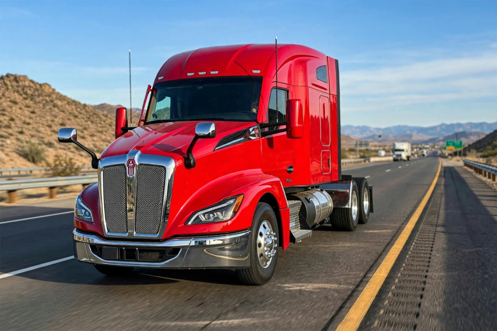
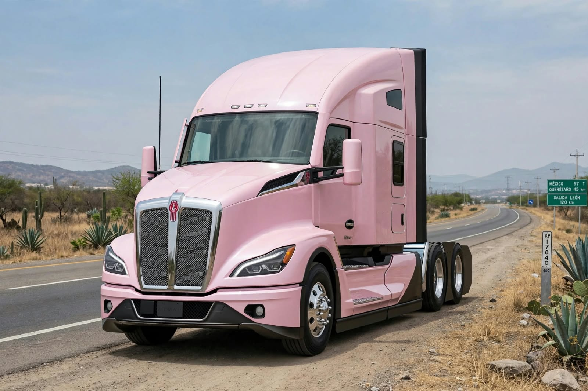

KENWHORT NEXT GEN


KENWHORT NEXT
No es otro modelo es el t680 pero totalmente diseñado .Lo lanzaron en USA en 2021 como modelo 2022 para remplazar alt680 clasico .Es el cambio mas grande que le han hecho al t680 en 10 años
¿QUE TIENE DE NEXT?
Cofre 30% mas angosto y parrilla mas cerrada y unos faros LED integrados al cofre no sobrepuesto. Deflectores nuevos en el pilar A y arriba del palabritas que quitan la turbulencia y una defensa de 3 piezas si chocas solo cambias un pedazo.
<-ATRAS
<-SIGUIENTE